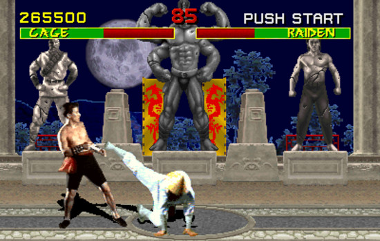
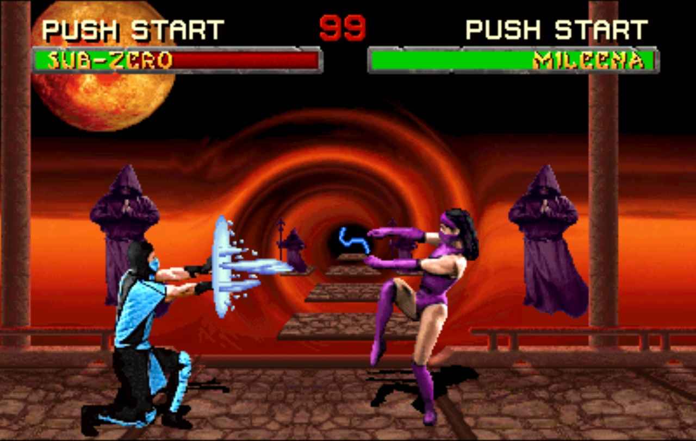
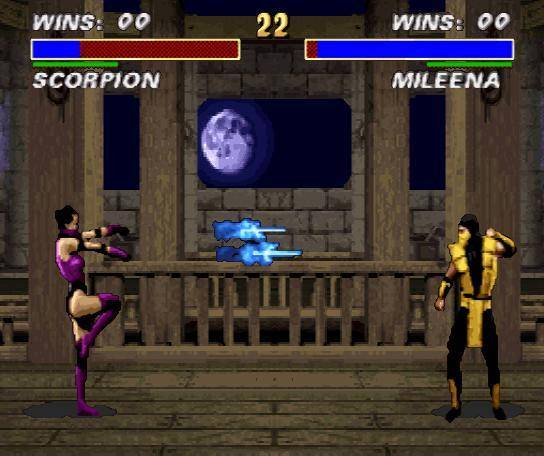
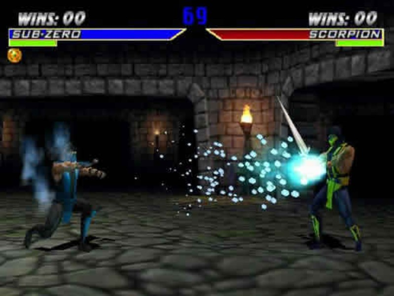
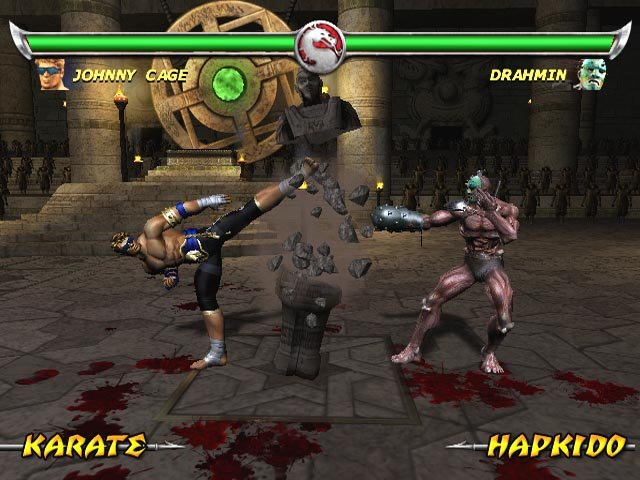
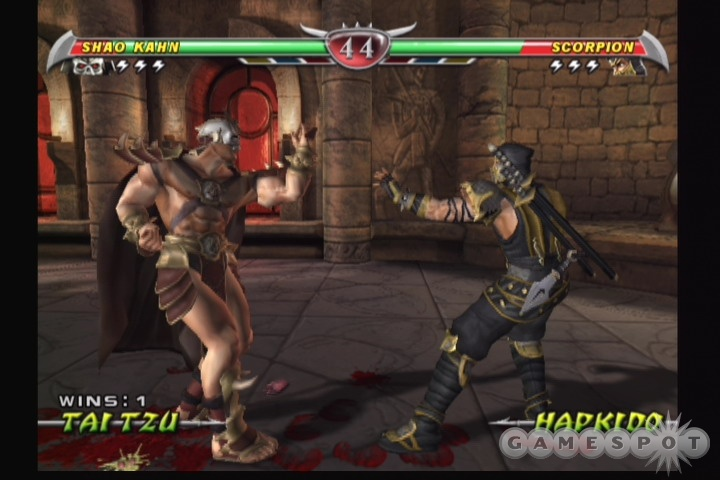
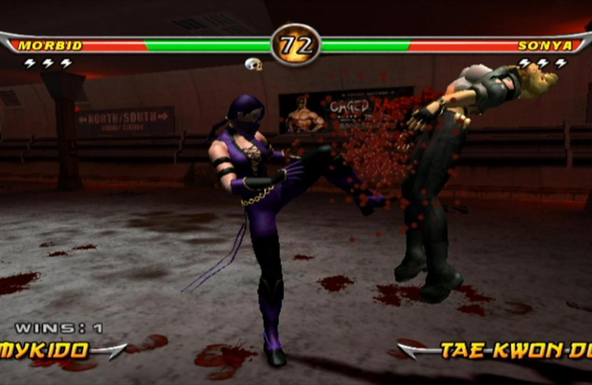
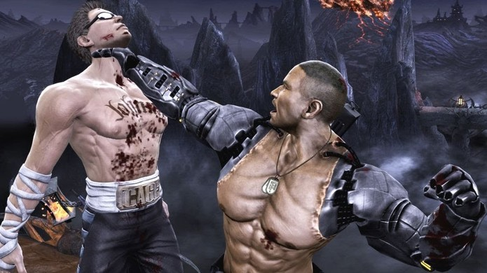
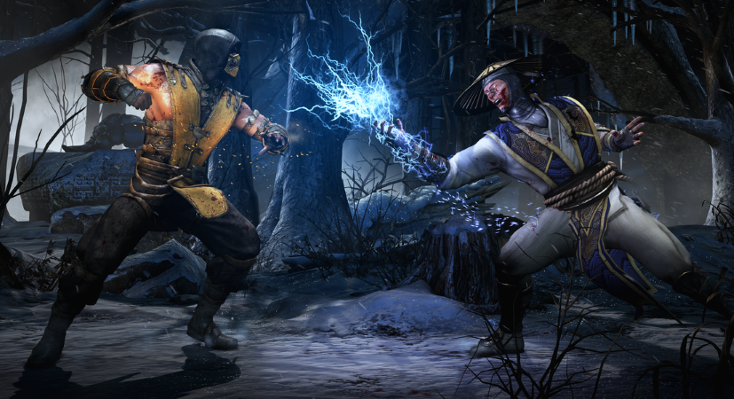

Mortal Kombat
Luiz Felipe Manoel
Mortal Kombat, criado por Ed Boon como programador, John Tobias e John Vogel como designers de arte e Dan Forden como engenheiro de som. A princípio tinham como objetivo criar um jogo sobre Jan Claude Van Damme, porém o ator havia feito contrato com outra empresa para realização de seu próprio jogo, que nunca foi lançado.
Assim então os desenvolvedores foram obrigados a criar um novo jogo, após 6 meses de nomes horríveis definiram o nome como Mortal Kombat, e aproveitando o modelo de Van Damme, criaram o personagem Johnny Cage, um ator narcisista de cinema que praticava artes marciais e possuía um golpe único inspirado no filme BloodShot do ator Van Damme, onde Johnny dava um espacate e socava as partes baixas de seu adversário.
Mortal Kombat 1992

O primeiro jogo dessa grandiosa franquia foi lançado em 1992 para Arcade e contava com apenas 7 personagens (Johnny Cage, Kano, Sub Zero, Sonya, Rayden, Liu Kang e Scorpion) primeiramente foi çançado somente para arcade, depois para SNES, Mega Drive e SEGA Genesis a franquia foi muito polêmica na época por conta de sua extrema violência nos chamados Fatalities, onde o lutador que vencia a luta finalizava o outro de maneira brutal, arrancando braços, pernas ou cabeça, isso fez com que a série se destacasse entre as outras, sua extrema violência garantiu fãs ao redor do mundo inteiro
No início o jogo era apenas um game de luta sem história, onde os personagens se enfrentavam sem objetivo algum.
Mortal Kombat 2

Assim como o primeiro jogo foi lançado inicialmente para Arcade em 1993, posteriormente para os seguintes consoles (SNES, Game Boy, Sega Saturn, Sega 32X, Sega Mega Drive, Sega Game Gear, Sega Master System, PlayStation, PC, Amiga), MK2 Representou um grande salto de evolução na sua gameplay, gráficos e quantidade de personagens em relação ao seu antecessor, e foi responsável por consolidar a franquia no mundo dos jogos. MK2 trouxe mais fatalities individuais, babylities, fazia com que o adversário derrotado se transforme em um bebês, stage fatalities, onde algumas fases especiais tinham próprias finalizações e os friendhips, quando os adversários realizavam alguma interação amigável ao final do combate.
A história do jogo era o confronto dos melhores lutadores do plano terreno contra os melhores do submundo, onde os dois reinos travavam uma batalha para decidir quem comandaria o mundo. Os lutadores do plano terrestre viajaram ao submundo para enfrentar imperador Shao Kahn.
Mortal Kombat 3

Foi lançado após MK3 em 1995 para as seguintes plataformas (SNES, Sega Mega Drive e Sega Saturn), foi uma versão melhorada do terceiro game, continha melhorias gráficas, mais cenários, novos personagens e antigos que foram retirados em sua versão original, teve algumas mudanças em sua história e trouxe o Brutallity, um longo combo de finalizações que ao final o oponente é explodido e ocorre uma chuva de sangue e ossos. Foi um grande sucesso e anos mais tarde chegou para PS2, Xbox e Xbox 360
Mortal Kombat 4

O primeiro Mortal Kombat em 3D, foi um divisor de eras e surpreendeu muita gente, se tornando um símbolo para série, com combates em ambientes tridimensionais, chegou aos consoles em 1998 para (PlayStation, Nintendo 64, PC, Game Boy Color), trouxe um novo vilão para a série e tem um grande destaque para a movimentação dos personagens, cenários, armas e arremesso de objetos.
Mortal Kombat Deadly Aliance

Lançado em 2002 para Playstation 2, Game Cube e GBA foi bem recebido pelos fãs, o game trouxe quan chi e shang tsung e outros 10 personagens novos na franquia além do novo modo Konquest (Modo sobrevivência), a volta do Test your Might com desafios individuais
Mortal Kombat Deception

Lançado em 2004 para PS2 e Xbox foi o primeiro game da saga a ter modo online o game traz mais 17 personagens novos a franquia e coloca um sub-chef na franquia, Nobe-some, uma mistura de noob saibot com smoke. O jogo possuía mais 22 cenários, mais interativos, com armas, áreas letais e níveis, e trouxe um modo de xadrez ao game, chamado Chess kombat.
Mortal Kombat Armaggeddon

Lançado em 2006, foi um verdadeiro armageddon, pois trouxe todos os 61 combatentes de toda a franquia mais 2 (Taven e Daegon), o jogo adicionou novos movimentos de arremessos, opção para criação de novos lutadores, e um modo de corrida ao estilo Mario Kart, onde os lutadores dirigiam em pistas mortais com direitos a especiais e muito sangue, o jogo foi um dos mais vendidos e mais aclamados da franquia, porém sua história se perdeu muito e acabou confundindo e distanciando muito de suas origens.
Mortal Kombat (2011)

Lançado em 2011 para (Xbox 360, PlayStation 3, PlayStation Vita, Microsoft Windows) foi um reboot a saga, trazendo os combates em 2D de volta de uma maneira tridimensional, fazendo com que os fãs mais saudosistas fossem a loucura, foi muito bem recebido e agradou a grande parte dos jogadores, o jogo trazia novas funções como x-ray, onde uma barra era carregada durante a luta e quando acionada o lutador executa um combo violento e a câmera do jogo permite que você veja os ossos do adversário sendo quebrados, tudo com extrema violência e golpes alucinantes, o jogo trouxe 27 personagens e mais de 60 fatalities diferentes.
O visual do jogo é muito bem elaborado, além de um modo história, onde o jogador assume vários lutadores e seu objetivo é evitar que Raiden seja assassinado por Shao Kahn, como no Mortal Kombat 3, fazendo uma alteração na linha do tempo de todos os jogos posteriores ao 3 se tornassem uma linha alternativa, dando uma nova história para ser trabalhada deste reboot adiante
Mortal Kombat X

O jogo foi lançado em 2015 para PlayStation 4, Android, Xbox One, iOS, Microsoft Windows. Em MKX se passaram 25 anos após os acontecimentos de MK (2011) e podemos jogar com a nova geração de lutadores, Cassie Blade (filha de Joohny Cage com Sonya Blade), Jacqui Briggs (filha de Jax), Kung Jin(primo de Kung Lao) e Takeda(filho de kenshi e aprendiz de Skorpion), temos a volta do modo história, Raio X, agora com interação nas arenas, a volta da Krypta, e o modo online com o Faction Wars, onde os jogadores podem escolher um clã para representarem em suas lutas no modo online eles são: Lin Kuei, White Lotus, Brotherhood of Shadow, Black Dragon e Special Forces. Os jogadores ao vencerem ganham pontos para sua facção e ao fim de semana a facção com mais pontos ganha recompensas no fim de semana. Além disso uma versão mobile do jogo foi disponibilizada, onde você pode conquistar pontos para sua facção pelo celular e é possível transferir dados entre as plataformas.